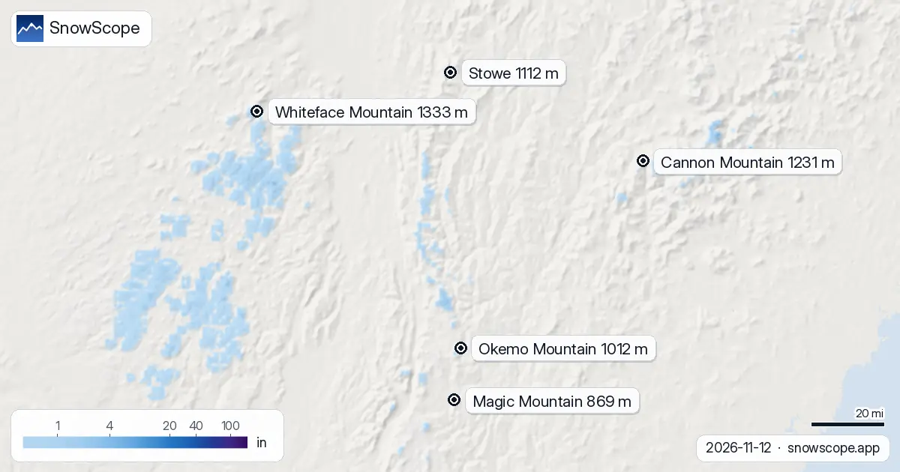

Quota neve nel Nord-est degli USA: dove piove e dove nevica, fino a 3.609 ft (12 novembre)
La nostra previsione mette lo zero termico nel Nord-est degli USA tra 0 ft (0 m) e 4.593 ft (1.400 m) nei giorni a venire. Il giovedì 12 novembre, nelle ore più miti, la quota neve a Magic Mountain arriva a 3.609 ft (1.100 m), circa 984 ft (300 m) sotto quel livello. Il lavoro sul campo in montagne secche insegna una cosa: la mappa è un inizio, l'ultima parola spetta al pendio.
Le previsioni neve in tempo reale per Whiteface Mountain nell'app SnowScopeAltezza neve, allerte powder e mappa 3D, gratis.
Quota neve, località per località
A Whiteface Mountain (base 1.220 ft (372 m), vetta 4.373 ft (1.333 m)) la quota neve sale a circa 1.640 ft (500 m) il 12 novembre: neve sulle piste alte, pioggia o neve bagnata sotto.
Cannon Mountain (base 1.883 ft (574 m), vetta 4.039 ft (1.231 m)): il 12 novembre la quota neve arriva a circa 2.297 ft (700 m), tra base e vetta, quindi neve in alto e pioggia o neve bagnata più in basso.
A Stowe (base 1.312 ft (400 m), vetta 3.648 ft (1.112 m)) la quota neve sale a circa 1.640 ft (500 m) il 12 novembre: neve sulle piste alte, pioggia o neve bagnata sotto.
Okemo Mountain (base 1.158 ft (353 m), vetta 3.320 ft (1.012 m)): il 12 novembre la quota neve arriva a circa 3.281 ft (1.000 m), tra base e vetta, quindi neve in alto e pioggia o neve bagnata più in basso.
Magic Mountain (base 1.378 ft (420 m), vetta 2.851 ft (869 m)): il 12 novembre la quota neve sale a circa 3.609 ft (1.100 m), più in alto della vetta, quindi pioggia o neve bagnata colpirebbero tutta la montagna.
| Località | Altezza neve | Neve fresca, 72 h | In arrivo, prossimi giorni | Quota max |
|---|---|---|---|---|
| Whiteface Mountain | 2 in (4 cm) | 3 in (7 cm) | 3 in (7 cm) | 4.373 ft (1.333 m) |
| Cannon Mountain | 0 in (0 cm) | 2 in (5 cm) | 4 in (9 cm) | 4.039 ft (1.231 m) |
| Stowe | 1 in (2 cm) | 2 in (6 cm) | 4 in (11 cm) | 3.648 ft (1.112 m) |
| Okemo Mountain | 2 in (5 cm) | 2 in (6 cm) | 5 in (13 cm) | 3.320 ft (1.012 m) |
| Magic Mountain | 0 in (0 cm) | 1 in (3 cm) | 4 in (10 cm) | 2.851 ft (869 m) |

Pioggia sulla neve?
Buone notizie per la neve già a terra: nei giorni umidi in arrivo la quota neve resta abbastanza bassa in queste località.
A Tug Hill (1.706 ft (520 m)) ci aspettiamo 11 mm di precipitazioni, e mentre cadono la quota neve è vicino a 1.247 ft (380 m).
Stowe (4.393 ft (1.339 m)) riceve 19 mm nella previsione; nelle ore umide la quota neve è vicina a 820 ft (250 m).
Giorno per giorno: lo zero termico
Lo zero termico sulle località qui sotto, dall'ora più fredda alla più mite di ogni giorno: giovedì 12 novembre: da 591 ft (180 m) a 4.593 ft (1.400 m). venerdì 13 novembre: da 262 ft (80 m) a 2.559 ft (780 m). sabato 14 novembre: da 0 ft (0 m) a 1.837 ft (560 m).
Perché la quota neve è più bassa dello zero termico
Quasi sempre l'aria si raffredda salendo. Sotto lo zero termico i fiocchi cominciano a fondere, e poiché è lento, la pioggia inizia solo circa 984 ft (300 m) più in basso, alla quota neve. L'aria secca raffredda la neve che cade per evaporazione e può spingere quella quota ancora più giù.
Consigli per sciatori
- Giorni miti: impianti più alti, versanti nord, mattina. Poi pranzo.
- Lo zero termico è una previsione con un errore di diverse centinaia di metri: ricontrolla la mappa il giorno prima.
- Prima di ogni uscita in fuoripista o scialpinismo leggi il bollettino valanghe ufficiale (link qui sotto).
- Neve sulla mappa non significa località aperta: controlla impianti e date sul suo sito.
Su questi numeri
Le altezze neve delle località sono la neve più alta sui pendii superiori secondo il modello neve di SnowScope (circa 1 km, calcolo del 12 novembre); sono stime per un'area, non una misura in un punto. I valori delle stazioni sono misure alla data indicata. Le previsioni possono cambiare. Leggi sempre il bollettino valanghe ufficiale prima del fuoripista.
Bollettini valanghe ufficiali: Mount Washington Avalanche Center
Cita questo articolo
Per ricerca, didattica o stampa: numeri e grafici sono liberamente riutilizzabili con licenza CC BY 4.0 citando così.
SnowScope (2026), Quota neve nel Nord-est degli USA: dove piove e dove nevica, fino a 3.609 ft (12 novembre), https://snowscope.app/blog/it/2026/11/us-northeast-freezing-level-snow-line-12-november-2026.html, consultato il 2026-11-12
SnowScope (Atlas Labs). (2026, November 12). Quota neve nel Nord-est degli USA: dove piove e dove nevica, fino a 3.609 ft (12 novembre). SnowScope snow reports. https://snowscope.app/blog/it/2026/11/us-northeast-freezing-level-snow-line-12-november-2026.html
BibTeX
@misc{snowscope2026usnortheastfreezinglevel,
author = {{SnowScope (Atlas Labs)}},
title = {Quota neve nel Nord-est degli USA: dove piove e dove nevica, fino a 3.609 ft (12 novembre)},
year = {2026},
month = nov,
howpublished = {\url{https://snowscope.app/blog/it/2026/11/us-northeast-freezing-level-snow-line-12-november-2026.html}},
note = {Published 2026-11-12 20:48 UTC; accessed 2026-11-12}
}· CC BY 4.0 · Metodi, dati e strumenti →
Whiteface Mountain: neve e temperatura per quota, quest'inverno vs lo scorso (strumenti) →
Segui Whiteface Mountain
Gratis: un messaggio quando arriva la neve e il meteo ogni mattina.
Altri bollettini neve

Mad River Glen, Vermont: neve naturale, circa 30 in (75 cm) di picco abituale a metà montagna in 46 inverni passati, febbraio il mese più nevoso. Tre modi per organizzare la giornata.

Dove nevicherà nel Nord-est degli USA tra il 13 novembre e il 26 novembre, e quanto? Abbiamo interrogato i due modelli globali che arrivano a due …

Il terreno bianco è cambiato: 676 sq mi (1.750 km²) il 8 novembre, 42 sq mi (110 km²) oggi e 12.668 sq mi (32.810 km²) attesi il 13 novembre. Da oggi …